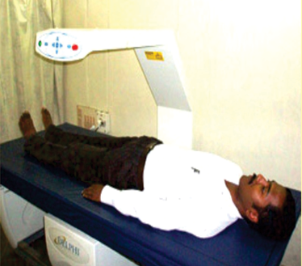

Diagnosis
How to diagnose ?
Osteoporosis can be diagnosed by BMD (Bone Mineral Density) test through DEXA scan
What is DEXA ?

DEXA stands for Dual Energy X-Ray Absorptiometry.
DEXA is a special low radiation X-ray capable of detecting quite low percentages of bone loss. They are used to measure spine and hip bone densities.
Most of the big diagnostic centers in one or two tier cities are equipped with it.
Proceed